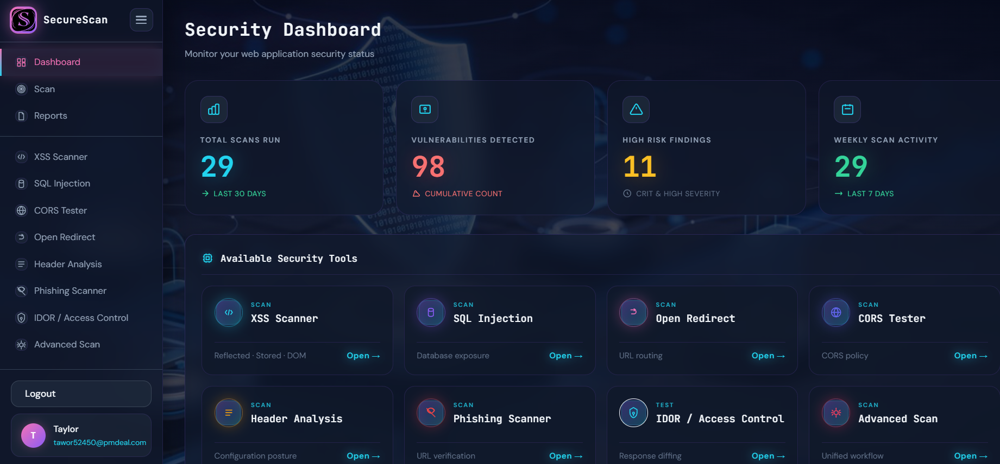
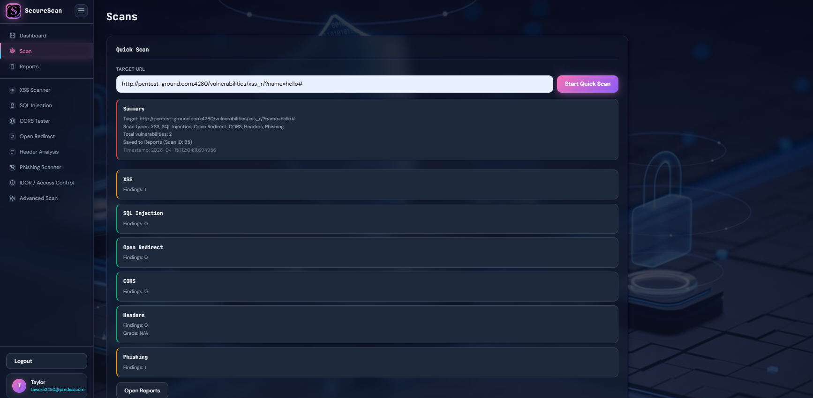

SecureScan — Vulnerability Scanner
Run focused scans across common web vulnerabilities with clear evidence and consistent severity tags.
Available Security Tools
SCAN
XSS Scanner
SCAN
SQL Injection
SCAN
Open Redirect
SCAN
CORS Tester
SCAN
Header Analysis
SCAN
Phishing Scanner
SecureScan is a focused web application security testing solution designed to help you assess common web risks with clear evidence and consistent severity tags.
Use it as a standalone scanner or as a lightweight component in larger security workflows.
SecureScan provides built-in checks across multiple vulnerability classes and helps you operationalize scanning with repeatable runs, a scan history view in Reports, and an API-driven backend.
By making SecureScan part of your security measures, you can improve your security posture and reduce exposure to common web attacks with a low resource cost.
Vulnerability Scanning Automation and Integration

Get a quick security overview from the dashboard: scans run, vulnerabilities found, high-risk results, and easy access to each security tool.
SecureScan is designed for repeatable workflows and structured results you can review in the UI or consume through the backend API (DevSecOps-friendly).
Use SecureScan to support your existing workflow:
- Run scans on demand during development and QA.
- Review scan history, severity, and details in Reports.
- Use the backend API to integrate scans into scripted workflows.
Fast, Accurate, and Scalable Web Vulnerability Scanner
SecureScan focuses on practical web vulnerability checks and aims to minimize false positives by favoring verifiable signals and evidence.
Run a unified scan to cover multiple checks in one go, then review the saved results in Reports.
- Coverage across common, high-impact web risk categories.
- Consistent severity tags to help prioritize remediation.
- Designed for scanning modern web apps with multiple endpoints.

Get Added Value From Your Website Vulnerability Scans

The Reports view keeps a history of your runs with severity badges and expandable details, so you can quickly triage what needs attention.
In addition to key web application vulnerabilities like SQL Injection and Cross-site Scripting (XSS), SecureScan includes checks for configuration and logic flaws that commonly appear in real-world applications.
- Coverage across common web vulnerability categories.
- Scan history + drill-down details via the UI and backend API.
- Useful for both quick checks and repeatable testing.